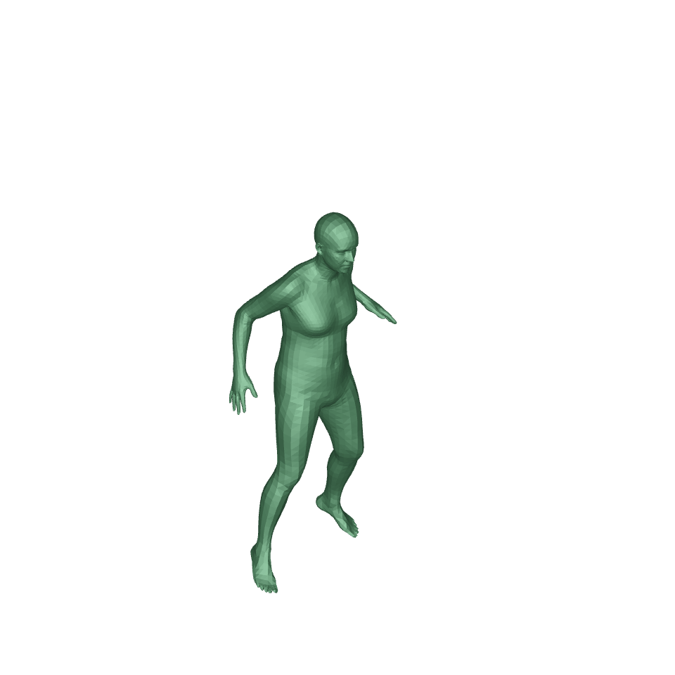
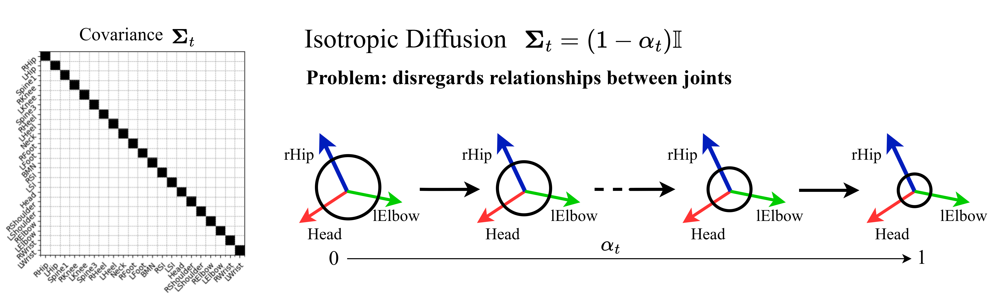
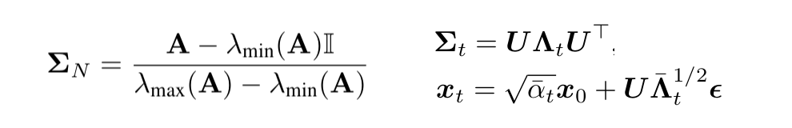
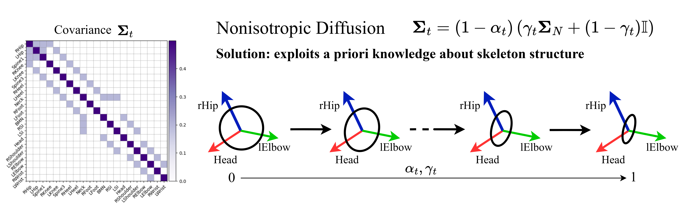
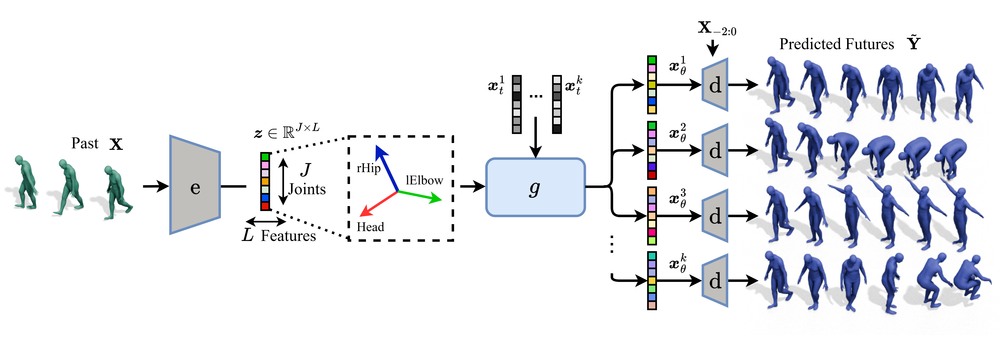
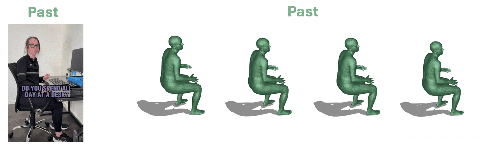

Abstract
Probabilistic human motion prediction aims to forecast multiple possible future movements from past observations. While current approaches report high diversity and realism, they often generate motions with undetected limb stretching and jitter. To address this, we introduce SkeletonDiffusion, a latent diffusion model that embeds an explicit inductive bias on the human body within its architecture and training. Our model is trained with a novel nonisotropic Gaussian diffusion formulation that aligns with the natural kinematic structure of the human skeleton. Results show that our approach outperforms conventional isotropic alternatives, consistently generating realistic predictions while avoiding artifacts such as limb distortion. Additionally, we identify a limitation in commonly used diversity metrics, which may inadvertently favor models that produce inconsistent limb lengths within the same sequence. SkeletonDiffusion sets a new benchmark on three real-world datasets, outperforming various baselines across multiple evaluation metrics.

From the past, predict the future.
Stochastic Human Motion Prediction
In this work, we address the problem of predicting human motion based on observed past movements, known as Human Motion Prediction (HMP). Specifically, from a temporal sequence of human joint positions, we aim to forecast their evolution in subsequent frames. We aim to predict not a single, deterministic future, but generate a wide range of diverse future motions (Stochastic HMP).
Nonisotropic Gaussian Diffusion
We replace the conventional isotropic Gaussian diffusion training and sampling procedure with a novel nonisotropic formulation that accounts for joint relations directly in the generation process.
More in detail, in denoising diffusion models the forward diffusion process employed during training adds Gaussian noise to the data at each diffusion timestep. In conventional diffusion approaches, such noise is sampled from a Gaussian distribution with diagonal covariance Σt, hence the process is defined as isotropic.



The correlated noise easies the generation task for the denoiser network: body joints are not assumed independet from each other (i.i.d) and the noise suggests that connected joints should be diffused similarly. As shown in our experiments, the nonisotropic formulation achieves better performance than the isotropic approach, requires fewer parameters and comes at no extra computational cost.
SkeletonDiffusion
We present SkeletonDiffusion, a latent diffusion model considering the skeleton structure and joint categories throughout the entire network with a Graph Convolutional architecture and joint-type attention. In contrast, existing SHMP approaches either ignore the skeleton’s graph structure or only leverage it at intermediate stage.

Our learned latent space is two dimensional, with one dimension representing the human body joints and the other temporally and spatially compressed features. Since the notion of human body joints is preserved in latent space, we diffuse the feature dimension isotropically as conventionally done in denoising diffusion models, and the joint dimension nonisotropically with a novel nonisotropic Gaussian diffusion formulation.
Huggingface Demo

